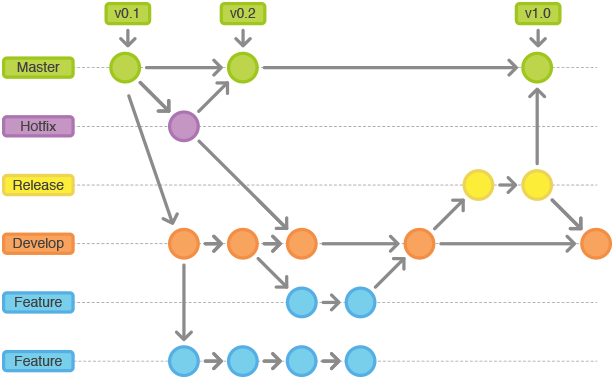

Git
Git ist ein Versionsverwaltungssystem (VCS) welches zur verteilten Versionierung von Dateien eingesetzt wird. Git ist Englisch und steht für Blödmann. Da Git unter der freien GNU Lizenz vetrieben wird, wird es zurzeit zur produktiven Entwicklung von vielen Open-Source-Projekten eingesetzt, darunter fallen unter anderem Debian, LibreOffice, Samba und VLC media player. Git kann zusätzlich zur Serverversion auch auf GitHub und GitLab verwendet werden, welche grafische Weboberflächen zur Übersicht und Verwaltung bereitstellen. Ursprünglich wurde Git zur Versioniesierung von Quellcode entwickelt, wird heute aber auch zur Sicherheits- und Versionskontrolle von anderen Dateien verwendet.
| Fakten über Git | |
| Aktuelle Version | 2.4.2 (26.05.2015) |
| Programmiersprache | C, Bourne-Shell, Perl |
| Betriebssystem | Verschiedene Unix Systeme, Microsoft Windows and Mac OS X |
| Hauptentwickler | Junio C. Hamano, Shawn O. Pearce, Linus Torvalds |
| Lizenz | GNU GPLv2 |
| Link | git-scm.com |

Glossar
Checkout: Initiales laden und lokales Erstellen eines Projekts.
Konflikt: Wenn eine Datei lokal geändert wurde die global bereits von einem anderen Teilnehmer verändert wurde und somit beidseitige Änderungen in den selben Zeilen aufweist..
Merge: Das automatische oder manuelle zusammenführen von Änderungen mit Konflikten auf globaler und lokaler Ebene.
Branch: Sind unterschiedliche Versionen eines Projekts, der initiale Branch ist immer der Master Branch. Der Master ist immer betriebsfähig, wenn also eine neue und größere Änderung am Projekt vorzunehmen ist, so ist es sinnvoll, einen Branch basierend auf dem Master zu erstellen und ihn in den Master zurückzuführen sobald der neue Branch voll funktionsfähig ist.
Rebase: Wenn ein Projekt mehrere Branches beinhanltet, dann sollte gelegentlich ein Rebase auf den Branch ausgeführt warden, auf dem der erstellte Branch basierte. Bei einem Rebase werden Änderungen von dem Parent Branch geladen, damit der Child Branch aktuell bleibt und der Merge aufwand sich nicht unnötig aufbaut.
Upstream: Gibt an mit welchem Branch der lokale Branch kommunizieren soll.
Fetch: Lädt Änderungen aus dem globalen Branch, wen ein Merge benötigt wird, so wird dieser nicht automatisch ausgeführt.
Pull: Lädt Änderungen aus dem globalen Branch, wen ein Merge benötigt wird, so wirdversucht diesen automatisch auszuführen.
Update: Eine Methode die nicht von Git sondern von PhpStorm stammt, hier wird zuerst gefetcht, anschließend kann man selbst entscheiden ob man den Merge ausführt und wenn, ob manuell oder automatisch.
Commit: Bei einem Commit werden ausgewählte Änderungen zusammen mit einer Beschreibung (Commitmessage) lokal hochgeladen. Sie werden lokal dann nicht mehr als Änderung angezeigt sind global aber noch nicht verfügbar.
Push: Wenn eine bereits lokal hochgeladene Datei global zur Verfügung gestellt werden soll, so müssen diese Änderungen gepusht werden.
Performance
Git hat eine sehr gute Performance weil es im Vergleich zu anderen VCS die meiste Logik lokal ausführt und somit keine ständige Verbindung zum VCS Server aufrecht erhalten muss. Das Primärziel bei der Entwicklung von Git war die Geschwindigkeit. Da Git ursprünglich auf dem Linux Kernel laufen sollte und somit auch große Verzeichnisse verwalten musste wurde sie als eine zentrierte C Applikation entwickelt welche keinen großen Overhead produziert und somit die Anforderungen an die Geschwindigkeit erfüllen kann.Benchmarks
Um die Performance zu messen wurden folgende Benchmarks durchgeführt, die Ergebnisse von Git wurden denen von SVN gegenübergestellt um einen Maßstab zum Vergleichen zu gewährleisten.Die Zeiten sind in Sekunden angegeben.
| Vorgang | Aktion | Git | SVN | Vergleich |
| Commit Files (A) | Kompletter Push Vorgang von 113 Dateien. | 0.64 | 2.60 | 4x |
| Commit Images (B) | Push Vorgang von 1000 Bildern mit 1080p Auflösung. | 1.53 | 24.70 | 16x |
| Log (50) | Log der letzten 50 Commits. | 0.01 | 0.38 | 31x |
| Log (All) | Log aller 26.056 Commits. | 0.52 | 169.20 | 325x |
| Update | Pull Vorgang für 113 Dateien. | 0.90 | 2.82 | 3x |
.png)
.png)
.png)
.png)
Lokal statt Zentral
Bei Git ist jeder Client ein lokaler kleiner Git Server. Dementsprechend kann Git auch ohne eine Verbindung zum globalen Hauptserver eingesetzt werden. Hierbei können alle Repositories bearbeitet werden die zuvor vom Hauptserver ausgecheckt wurden. Es können ebenfalls neue Branches von den lokal bestehenden Branches abgezweigt werden. Bis auf die Funktionen des globalen Pushs und des Pulls bzw. Fetchs können lokal alle Funktionalitäten eingesetzt werden. Z.B. kann der Verlauf des Branches eingesehen werden.

Zweigentwicklung
Mit Git ist es möglich in Zweigen anstatt im linearen Verfahren zu arbeiten. Das Abspalten und verschmelzen von verschiedenen Zweigen ist in vieler Hinsicht besser als das Arbeiten in einer linearen Struktur. Denn das ermöglicht ein Entwickeln von mehreren Features ohne dass die Funktionalität der produktiven Struktur gefährdet wird. In der folgenden Grafik ist die Funktionsweise des Zweigsystems dargestellt. Die Pfeile Zeigen den Verlauf von links nach rechts und geben an auf welche Version und welchen Branch der fortlaufende Stand basiert.

Kryptographie
Jedem Commit wird ein Hash zugewiesen welcher auf der gesamten vorläufigen Geschichte des Projekts basiert. Dementsprechend werden alle folgenden Hashs neu generiert, wenn ein vorheriger Commit noch einmal bearbeitet wird. Aufgrund dieser Tatsache ist es einfach zu erkennen, ob die Versionsgeschichte manipuliert worden ist. Solche Verläufe werden als korrumpiertes Objekt in der Git Bash angezeigt.
Grafisches Interface
Der Git Server selbst bietet eine in Perl verfasste eigene Weboberfläche (Gitweb) an. Wenn man auf einem externen Git Server arbeitet, dann bieten diese in der Regel ebenfalls eine Weboberfläche an, z.B. GitHub oder Gitlab.
Datenübernahme
Sollte es einmal nötig sein das VCS zu wechseln, so gewährleisten zusätzliche Hilfsprogramme die Interoperabilität zu z.B. SVN (Subversion) und CVS(concurrent versions system). Dementsprechend können ganze Projekte mit Inhalt und Verlauf ohne großen Aufwand in andere VCS übernommen werde.